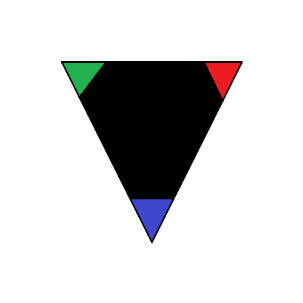
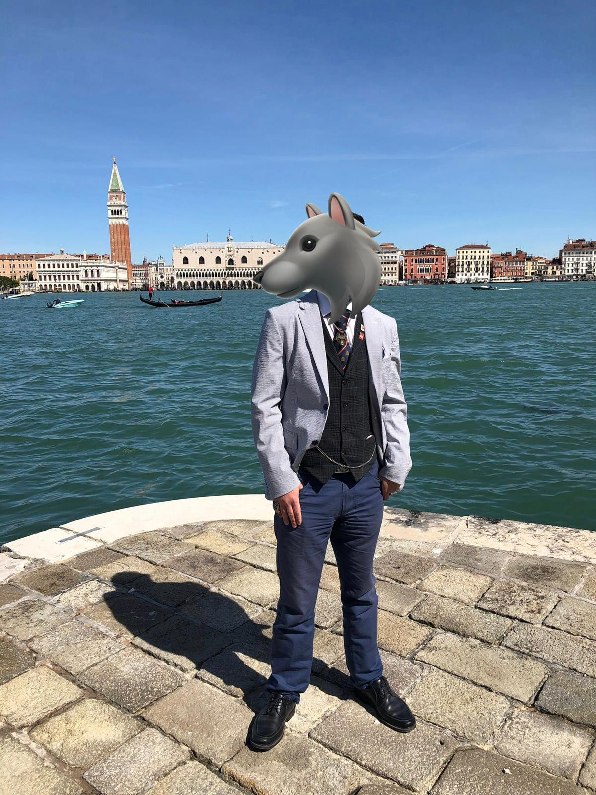

About the Wild Hunt Project
The Wild Hunt Project is a manifesto for action. It exists to support the creation of decentralised, open organisations where people from many backgrounds come together to hunt down the world’s hardest problems. A Wild Hunt Problem-Hunter is anyone who chooses purposeful action, blending curiosity, intelligence, wisdom, and collaboration to turn ideas into solutions. This manifesto offers a clear framework for those who wish to form problem-hunting teams and take part in shaping a more thoughtful, humane future.
Who Am I?

💻 I am a Venetian–Irish problem-hunter who left Venice (Italy) to study computer science and cybersecurity in Dublin. That move was less about geography and more about direction: I am driven by the belief that knowledge, when paired with deliberate action, can genuinely improve the world we share.
🐺 Friends in Italy started calling me Wolf long before it became an identity I embraced. I was always drawn to problems early, not as obstacles, but as things worth tracking, understanding, and patiently working through. The name stuck because the instinct did.
📚 While my formal work lives in computer science and cybersecurity, my thinking does not stay neatly inside disciplinary borders. I take a polymath approach to problem-hunting, drawing equally from physics, history, literature, and the human stories behind systems. The most interesting solutions, in my experience, emerge where technical rigour meets cultural and historical understanding.
🤓 Outside the work, I recharge the same way many curious minds do: cooking food that reminds me where I come from, reading widely, playing games that reward strategy and patience, and losing time to puzzles, chess, and the occasional stream. These are not distractions; they are training grounds for attention, creativity, and perspective.
I hold close a simple idea, borrowed from the fictional character of Spider-Man but grounded in reality: "A hero is just someone who does not give up." Problem-hunting, to me, is not about bravado or brilliance. It is about staying with a problem long enough to do right by it. 🕷
Feel free to reach out to me fellow problem-hunters: lupusartorias@gmail.com
The Wild Hunt Manifest
A Wild Hunt Problem-Hunter works to reduce harm and complexity created by unresolved problems, while remaining mindful of consequences. Action is guided by care, foresight, and an understanding that even well-intentioned solutions can create new risks. Progress is measured not only by what is fixed, but by what is protected in the process.
The practice of problem-hunting must never rely on fear, coercion, or domination. A Wild Hunt Problem-Hunter respects the freedom, dignity, and agency of others, recognising that lasting solutions cannot be built through control or intimidation.
A Wild Hunt Problem-Hunter acts within the law and is guided by a considered ethical compass. Decisions are made with respect for justice, fairness, and accountability, recognising that responsible action requires both moral judgement and restraint.
Urgency does not justify recklessness. A Wild Hunt Problem-Hunter weighs multiple options, seeking solutions that address immediate needs while accounting for long-term consequences and systemic effects.
Pride and ego have no place in problem-hunting. A Wild Hunt Problem-Hunter acts with humility, choosing effective responses while remaining firmly within ethical, moral, and legal boundaries.
A Wild Hunt Problem-Hunter maintains personal independence and balance, ensuring that the work of problem-hunting does not overwhelm or diminish their life beyond the mission.
Any Problem-Hunter who engages in illegal, unethical, or immoral conduct cannot remain part of the Wild Hunt Project. Participation is withdrawn to protect the integrity of the mission, the safety of others, and the values the project exists to uphold.
A Wild Hunt Problem-Hunter draws insight from history, examining what has worked and what has failed before, and applies those lessons with creativity and care to today’s problems.
Core Foundations
Astutia - Collaboration and Community
Astutia is the practice of working together with intention. Wild Hunt Problem-Hunters share solutions openly, not to claim credit, but to strengthen collective understanding and reduce duplicated effort. Collaboration across backgrounds, disciplines, and perspectives is treated as a necessity rather than a virtue, because complex problems rarely yield to isolated thinking. Through this shared work, communities are formed around responsibility and trust, capable of addressing systemic and global challenges with resilience rather than fragmentation.
Ferocies - Protect and Act
Ferocies is the commitment to act when inaction would cause harm. Wild Hunt Problem-Hunters respond to pressing and emerging threats with clarity and resolve, prioritising the protection of people over hesitation or performative caution. Action is taken to reduce suffering in the present, while remaining focused on addressing root causes so that protection today does not create greater risk tomorrow. Ferocies is not recklessness; it is the courage to intervene thoughtfully when it matters most.
Sapientes - Wisdom and Innovation
Sapientes is the practice of thinking deeply before acting boldly. Wild Hunt Problem-Hunters pursue creative and sustainable solutions by combining knowledge, experimentation, and reflection. Innovation is treated not as disruption for its own sake, but as the careful evolution of methods in response to new evidence and changing conditions. Through continuous learning, testing, and revision, problem-hunting techniques improve over time rather than stagnate.
Walk the Path
Joining the Wild Hunt Project is simple and open to anyone who feels aligned with its values. There are no applications to submit and no barriers to entry. Participation is voluntary, self-directed, and shaped by the responsibility each person chooses to take on.
If the purpose, principles, and core foundations resonate with you, you are already on the path. You may associate yourself with the project publicly, for example through a social media tag, or remain private under a chosen name. Real-world identities are not required; what matters is how you act and the care you bring to the work.
You may walk alone or alongside others. Some problem-hunters form teams, some contribute quietly, and some move between both. What unites them is a shared intent to address problems thoughtfully, uplift humanity, and uphold the values of the Wild Hunt Project.
This path is not about belonging to a group, but about choosing a way of working in the world.
The road is shared, the burdens differ, and the Hunt goes on. ❤️